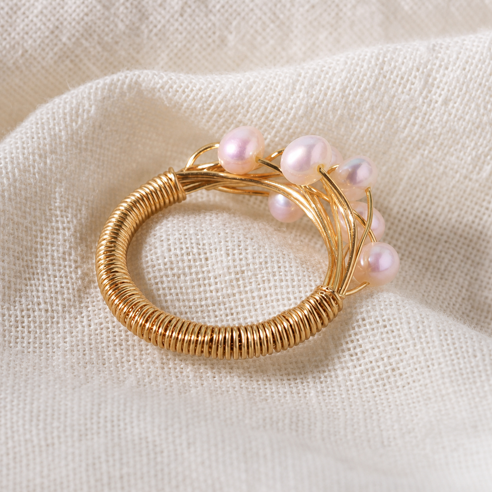
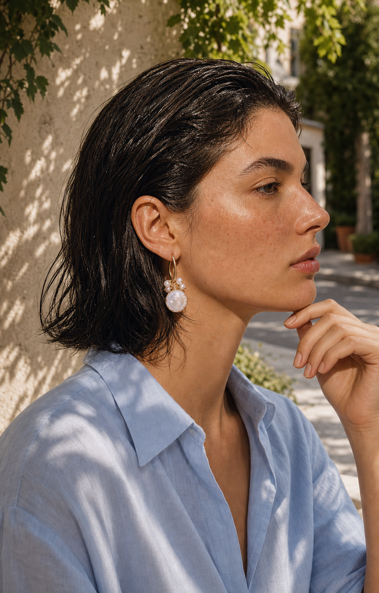
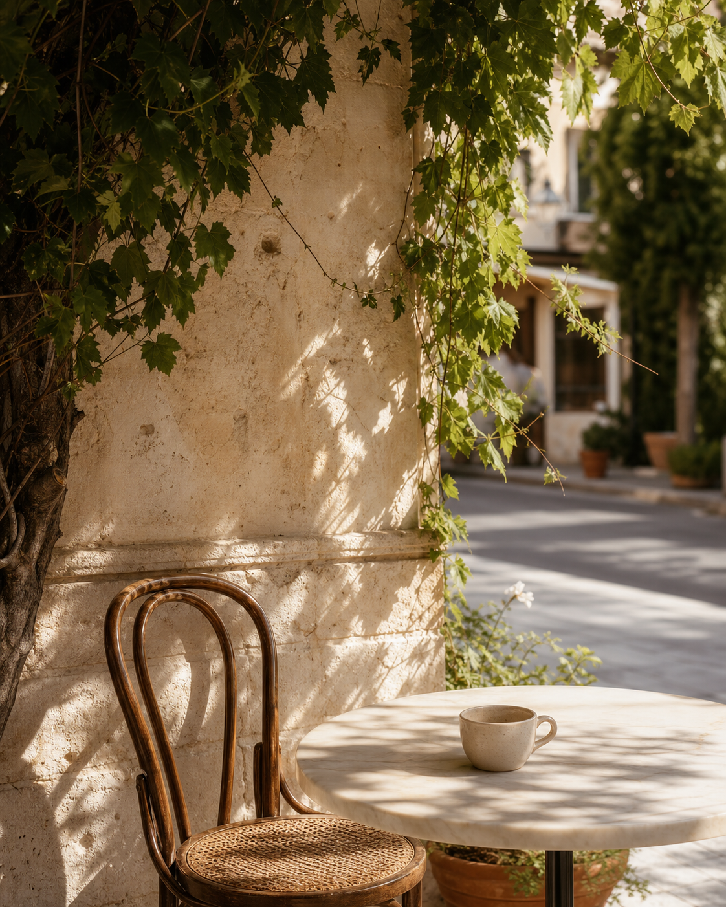
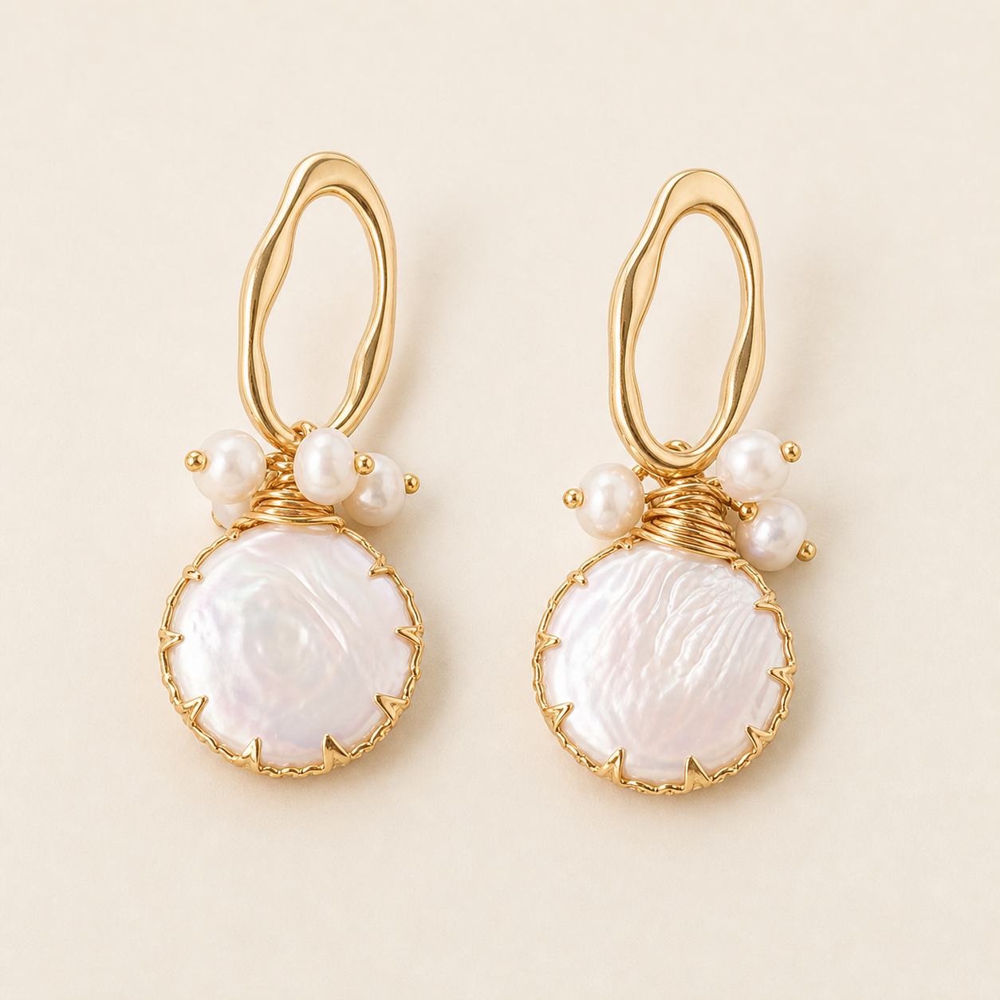
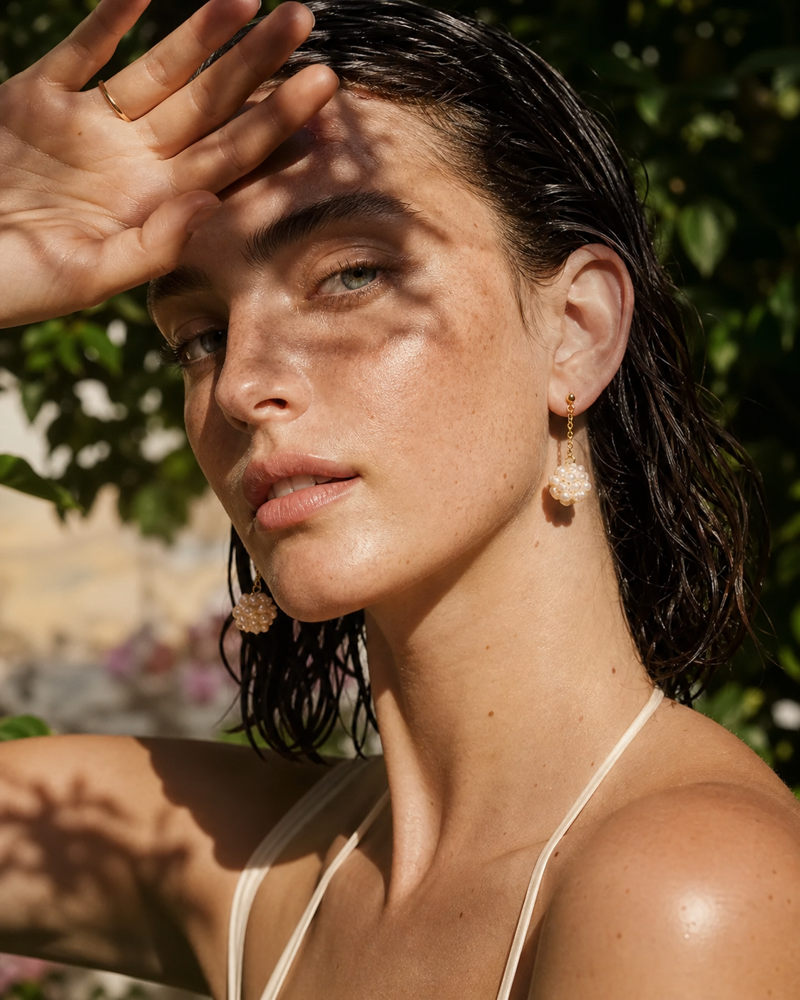
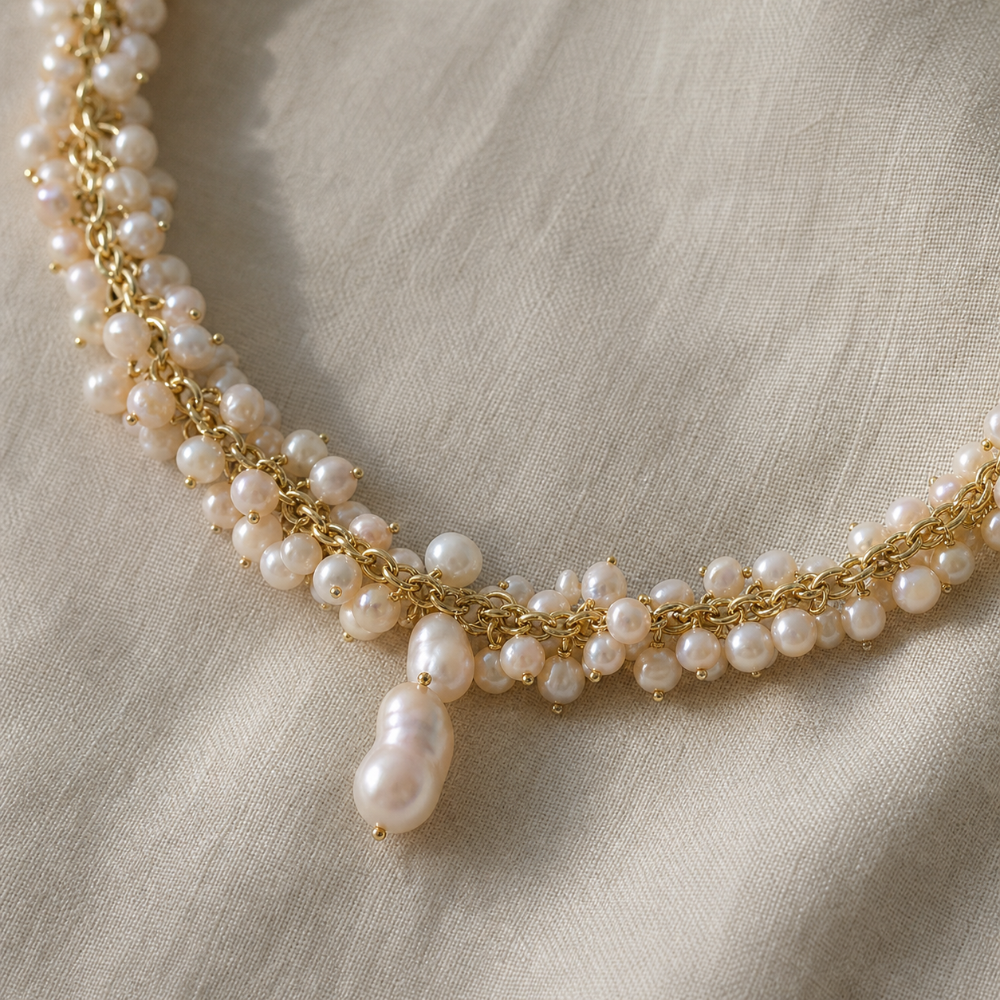
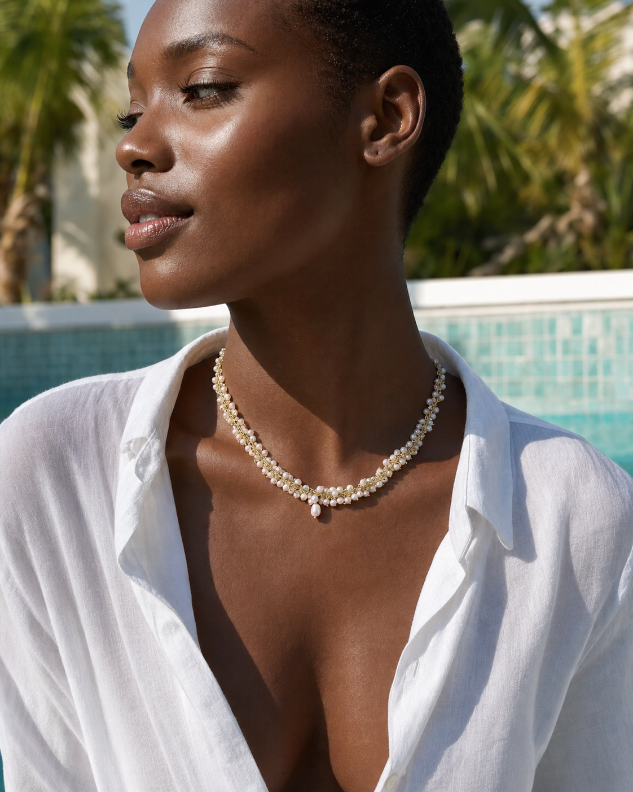
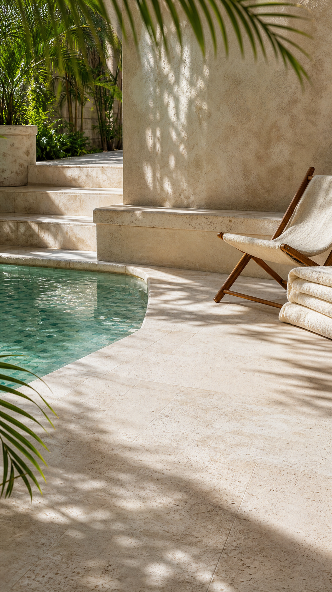

@图1 / 产品
结构唯一来源
密绕环体、金属枝线、缠绕结与珍珠簇不可变化。
MythRealms / Human Model Director Boards 001
戒指、耳环、项链各一套。每套固定同一产品、同一位模特、同一处场景。
每个镜头都按 @图1 产品 → @图2 模特 → @图3 场景 的顺序上传。产品图只锁结构；模特图只锁脸、发型、肤色和衣服；场景图只锁空间和光线。模特参考图中已有的其他首饰不转移。

@图1 / 产品
密绕环体、金属枝线、缠绕结与珍珠簇不可变化。

@图2 / 模特
锁定脸、短发、雀斑和蓝色亚麻；忽略耳饰。

@图3 / 场景
石桌、陶瓷杯、常春藤与午后叶影不变。

@图1 / 产品
椭圆金属圈、珍珠簇、缠绕领口、贝片圆盘不可变化。

@图2 / 模特
锁定脸、湿发和肤色；忽略原图耳环。
@图3 / 场景
柠檬树、陶罐、灰泥墙和叶影方向不变。

@图1 / 产品
金色链条、小珍珠分布与中央水滴珍珠不可变化。

@图2 / 模特
锁定脸、短发、深肤色和白色亚麻；忽略原图项链。

@图3 / 场景
绿池水、石材、躺椅和棕榈影方向不变。